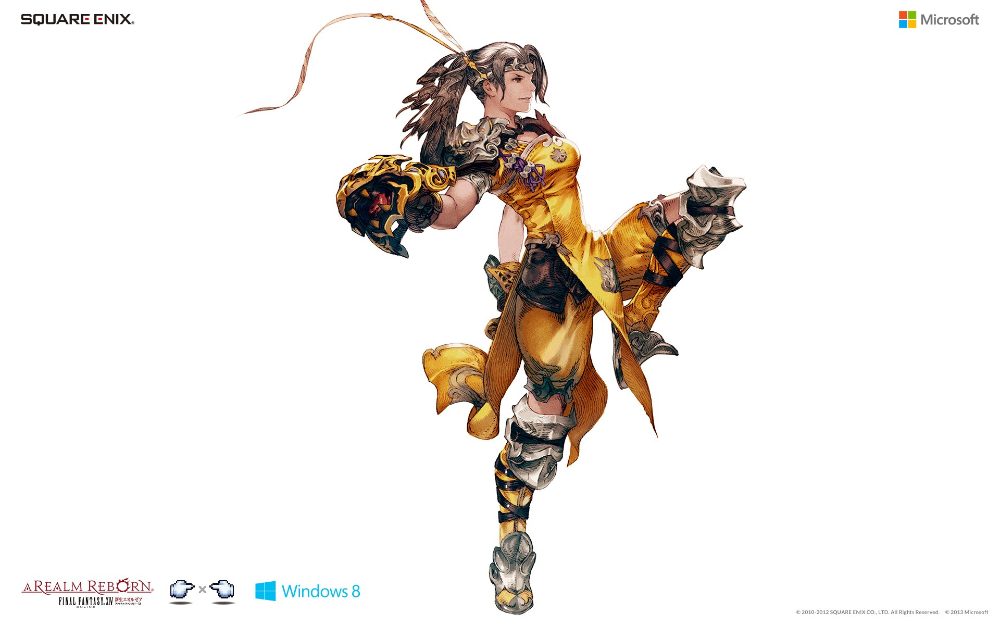
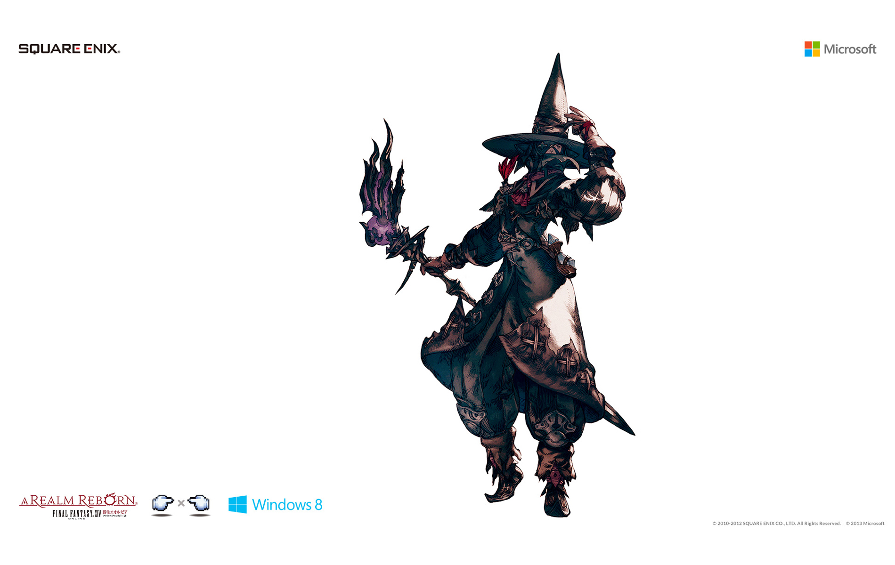

For centuries, the elite of the Sultansworn have served as personal bodyguards to the royal family of Ul'dah. Known as paladins, these men and women marry exquisite swordplay with stalwart shieldwork to create a style of combat uncompromising in its defense. Clad in brilliant silver armor, they charge fearlessly into battle, ever ready to lay down their lives for their liege. To be a paladin is to protect, and those who choose to walk this path will become the iron foundation upon which the party's defense is built.
Main Skills
Sword Oath
Increases the potency of auto-attacks by 50.
Cannot be used with Shield Oath.
Effect ends upon reuse.
Cover
Takes all physical damage intended for another party member for 12s.
Can only be used when the party member is 6y or closer.
Shield Oath
Reduces damage received by 20% and increases enmity, while lowering damage dealt by 20%.
Cannot be used with Sword Oath.
Effect ends upon reuse.
Spirits Within
Delivers an attack with a potency of 300.
Potency decreases as HP decreases.
Hallowed Ground
Renders you impervious to most attacks for 10s.
Job Synopsis
Rotation Notes
The Paladin has a wide range of skills designed to hold enmity or mitigate damage, as you'd expect. Some are situational while others you will use on a regular basis. The job also has some combos designed for increasing enmity and one designed for damage. These combos are listed below.
Fast Blade > Riot Blade
Fast Blade > Savage Blade
Savage Blade > Rage of Halone
Fast Blade > Savage Blade > Rage of Halone
Warrior
On the northernmost edge of Abalathia's Spine exists a mountain tribe renowned for producing fearsome mercenaries. Wielding greataxes and known as warriors, these men and women learn to harness their inner-beasts and translate that power to unbridled savagery on the battlefield.In former times which saw war waged ceaselessly in Eorzea, the warriors featured prominently on the frontlines of battle. With the arrival of peacetime, however, their art has descended into the shadows of obscurity, where it remains to this day.
Main Skills
Defiance
Increases maximum HP by 25%, while lowering damage dealt by 25% and increasing enmity.
Increases HP recovery via curing magic by 20% for self. Ends upon reuse.
Using certain actions while under the effect of Defiance will grant Wrath.
Each unit of Wrath increases critical hit rate by 2%. When five units are stacked, you will become Infuriated.
All Wrath is lost when Defiance ends.
Inner Beast
Delivers an attack with a potency of 300.
Ignores the 35% damage penalty inflicted by Defiance.
Can only be executed when Infuriated. All Wrath is lost when used.
Additional Effect: Absorb 100% of damage dealt as HP
Additional Effect: Reduces damage taken by 20%
Unchained
Nullifies the damage penalty inflicted by Defiance for 20s.
Can only be executed when Infuriated. All Wrath is lost when used.
Effect is canceled if Defiance ends.
Steel Cyclone
Delivers an attack with a potency of 200 to all nearby enemies.
Ignores the 35% damage penalty inflicted by Defiance.
Can only be executed when Infuriated. All Wrath is lost when used.
Additional Effect: Increased enmity
Infuriate
Instantly grants five units of Wrath, changing status to Infuriated.
Can only be used when Defiance is active.
Job Synopsis
Rotation Notes
As mentioned earlier, the Warrior uses damage in order to retain enmity and a lot of this is generated via powerful combos. These combos need to be planned and used alongside other buffs in order to maximise their damage and enmity generation. Before we get into the skill rotations it is worth listing what these combos are.
Heavy Swing > Skull Sunder
Heavy Swing > Maim
Maim > Storm's Path
Maim > Storm's Eye
Skull Sunder > Butcher's Block
Heavy Swing > Maim > Storm's Path
Heavy Swing > Maim > Storm's Eye
Heavy Swing > Skull Sunder > Butcher's Block
Dragoon
Of all the things that are symbolic of the nation of Ishgard, few are more recognized than the dragoon. Born amidst the timeless conflict between men and dragons, these lance-wielding knights have developed an aerial style of combat, that they might better pierce the scaled hides of their mortal foes.Taking to the firmament as though it were an extension of the land, they descend upon the enemy with every onze of their bodies behind the blow. It is this penetrative power that characterizes the dragoon
Main Skills
Jump
Delivers a jumping attack with a potency of 200. Returns you to your original position after the attack is made.
Cannot be executed while bound.
Elusive Jump
Executes a jump to a location 15y behind you, while removing any Heavy or Bind effects.
Additional Effect: Reduces enmity.
Spineshatter Dive
Delivers a jumping attack with a potency of 170.
Additional Effect: Stun for 2s.
Cannot be executed while bound.
Power Surge
Increases the damage dealt by one Jump or Spineshatter Dive by 50% for 10s.
Dragonfire Dive
Delivers a jumping fire-based attack with a potency of 250 to all nearby enemies.
Cannot be executed while bound.
Job Synopsis
Rotation Notes
As mentioned earlier, the Dragoon uses combos to deal heavy damage to their targets. These combos need to be planned and used alongside other buffs in order to maximise their damage. Before we get into the skill rotations it is worth listing what these combos are.
True Thrust > Vorpal Thrust
Vorpal Thrust > Full Thrust
Impulse Drive > Disembowel
Heavy Thrust > Ring of Thorns
Disembowel > Chaos Thrust
True Thrust > Vorpal Thrust > Full Thrust
Impulse Drive > Disembowel > Chaos Thrust

Monk
Though now under Garlean rule, the city-state of Ala Mhigo once boasted the greatest military might of all Eorzea. Among its standing armies were the monks ascetic warriors as dreaded by foes on the field of battle as the city states great pikemen.The monks comprised an order known as the Fist of Rhalgr, and it was to this god the Destroyer that they devoted their lives of worship. By mastering seats of power within the body known as chakra, they are capable of performing extraordinary physical feats
Main Skills
Rockbreaker
Delivers an attack with a potency of 130 to all enemies in a cone before you.
Can only be used when in coeurl form.
Additional Effect: Changes form to opo-opo for 10s.
Additional Effect: Grants Greased Lightning for 12s.
Greased Lightning Bonus: Increases damage dealt by 7% and attack speed by 5%.
Shoulder Tackle
Rushes to target and delivers an attack with a potency of 100.
Additional Effect: Stun for 2s.
Cannot be executed while bound.
Fists of Fire
Increases damage dealt by 5%.
Cannot be used with Fists of Earth or Fists of Wind and shares cooldown with both.
Effect ends upon reuse.
One Ilm Punch
Delivers an attack with a potency of 80.
Can only be used when in raptor form.
Additional Effect: Removes one beneficial status from target.
Additional Effect: Changes form to coeurl for 10s.
Dragon Kick
Delivers an attack with a potency of 100.
150 when delivered from a target's flank.
Opo-opo Form Bonus: Reduces target's blunt resistance and Intelligence by 10% for 15s.
Additional Effect: Changes form to raptor for 10s.
Job Synopsis
Rotation Notes
Ideally you should be aiming for Greased Lightning buff so you will try to use one skill from each form in order to get there as fast as possible. One thing to remember is that positioning is key with a lot of Monk skills. You may need to be behind or on a target's flank for maximum damage though you don't want to be moving around with every action as it may not always be possible. The skill rotation for Monk is somewhere along the lines of this:
Fists Of Fire
Boot Shine - Behind
True Strike - Behind
Demolish - Behind
Touch of Death Fracture
Dragon Kick - Flank
Twin Snakes - Flank

Black Mage
In days long past, there existed an occult and arcane art known as black magica, potent magic of pure destructive force born forth by a sorceress of unparalleled power. Those who learned to wield this instrument of ruin came to be called black mages, out of both fear and respect for their gift. Yet great power served to corrupt the judgment of mortal man, and so he unknowingly set out upon the path of ruin.
Main Skills
Convert
Sacrifices 20% of maximum HP to restore 30% of MP.
Cannot be executed when current HP is lower than 20%.
Freez
Covers a designated area in ice, dealing ice damage with a potency of 20 and binding enemies that enter for 15s.
Additional Effect: Grants Umbral Ice for 10s or removes Astral Fire
Apocatastasis
Increases a party member's fire, ice and lightning resistances by 30% for 12s.
Cannot be reused on an individual for 60s from when the effect wears off.
Cannot be cast on self.
Manawall
Creates a barrier that nullifies two physical attacks for 60s.
Flare
Deals fire damage with a potency of 260 to a target and enemies near it.
Additional Effect: Grants Astral Fire III for 10s or removes Umbral Ice.
Job Synopsis
Rotation Notes
As a BLM your elemental spells are Fire, Ice and Thunder. Fire is your primary damage element, Ice is your supportive element and Thunder is your damage over time (DoT) element. They all serve their own important roles. It is important to understand when to use each spell.
White Mage
White magic, the arcane art of succor, was conceived eras past that the world might know comfort. Alas, man began perverting its powers for self-gain, and by his wickedness brought about the Sixth Umbral catastrophe. Although the art subsequently became forbidden, it is now in the midst of a revival at the hands of the Padjal, chosen of the elementals.
Main Skills
Presence of Mind
Increases casting speed of spells for 10s.
Regen
Grants healing over time effect with cure potency of 150 to target for 21s.
Divine Seal
Increases healing magic potency by 30% for 15s.
Holy
Deals magic damage with potency of 240 to all nearby enemies.
Additional Effect: Stun for 4s
Benediction
Restores all of a target's HP.
Job Synopsis
Rotation Notes
As a WHM there is no set skill rotation throughout the battle, it is entirely situational. There is some preparation work that will help you maximise your potential however. Protect should always be on all of your party members and Stoneskin should also be cast between fights. Upon engaging the monster cast Aero II to apply the damage over time effect.